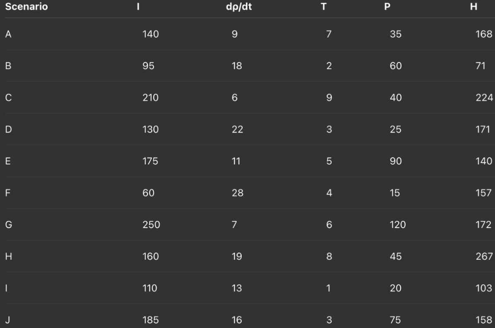

Big problems - such as natural catastrophes, health crises for the general public, and when essential systems break down - do a great deal of damage to the economy and to society. When things like this happen, people in charge have to decide how to put money into stopping trouble before it starts, being able to act quickly when it does start, and getting ready for trouble in the first place. People generally talk about these choices using what feels right, or what happened in the past, and not using organised, numerical thinking.
This work looks at if a straightforward set of mathematical ideas can help people compare these ways of dealing with things. The purpose isn’t to make an accurate model of what will happen, but to make a clear system which learners and the general public can use to see how different beliefs affect what happens. By making a simple calculation of how damage builds up, this work is meant to make people think in numbers when they’re deciding what to do first.
Total harm is defined using a simplified relationship capturing initial damage, spread, delay, and preparedness.
It is defined as \( H = I + \frac{d\rho}{dt} \times T - P \)
Where H represetns total harm measured in pounds (£) of economic damage
\(I\) Represents initial damage at onset of a crisis
\(\frac{d\rho}{dt}\) represents the rate at which damage spreads over time (£ per hour)
\(T\) Represents delay before mitigation or response begins
\(P\) Represents Preparedness capacity, interpreted as harm reduction

Ten hypothetical scenarios were assessed using chosen values for initial damage (I), damage spread rate (dρ/dt), response delay (T), and preparation (P) in order to investigate how the model performs under various strategic conditions. The model equation was used to directly determine total harm (H).
Significant sensitivity to parameter modification was shown by the overall harm values, which varied from 71 to 267 (arbitrary £ units) throughout the scenarios. Examining the results revealed a number of noteworthy trends.
First, there was a definite moderating effect from readiness. Despite having a very high spread rate, Scenario B provided the least overall harm because it combined modest initial damage with high readiness and quick response. In a similar vein, Scenario G showed how being well-prepared could counteract significant early damage and prevent more harm than could be anticipated. The model's premise that readiness directly reduces harm is supported by these examples.
Second, when spread rates were high, response delay had a significant impact on results. Due in large part to a combination of a higher spread rate and a longer delay prior to action, Scenario H generated the highest harm value. Similar behaviour was shown by Scenario C, indicating that delays become especially harmful when combined with significant initial impacts or protracted accumulation periods.
Third, differences in initial harm and spread rate can be used to infer consequences associated to prevention. Unless paired with extremely high rates of spread or inadequate readiness, scenarios with lower initial exposure tended to stay controllable. On the other hand, even when other indicators were low, substantial initial damage frequently resulted in enhanced harm, suggesting that early risk reduction may have systemic benefits.
All things considered, the scenario comparisons support the framework's primary goal of facilitating organised thinking about strategic trade-offs. The statistics show that efficiency depends on contextual interactions between parameters rather than establishing a technique that is universally optimal. Relationships that might be missed by using only qualitative evaluation are revealed by quantitative comparison.
The project moves from merely conceptual design to exploratory analysis when these possible numerical values are incorporated into the model. This step facilitates the discussion of sensitivity, permits the observation of behavioural patterns, and identifies possible research problems for further study.
Additional advancements might involve computational simulation across broader parameter spaces, statistical summary measures, or the visualisation of parameter connections. These additions would increase the framework's analytical depth and enhance its value as a tool for learning and exploration.
This paradigm should not be regarded as a representative representation of crisis dynamics in the actual world due to its significant shortcomings. This does not account for the feedback loops, thresholds, and cascade effects that are present in real systems, which are nonlinear. The hypothetical values of the parameters might not represent actual magnitudes. Despite being multidimensional, preparedness is expressed as a single subtractive quantity. It is oversimplified how preparedness, response, and prevention interact.
Nonetheless, acknowledging these constraints offered insightful information about data gaps and potential future study avenues. It emphasised how crucial it is to measure the impact of response delays empirically, measure the efficacy of preparedness, and estimate parameters using case studies from the past. One significant result of early modelling work is the identification of unknowns, which directs additional research and improvement.
Students and early learners who are interested in using mathematics in practical decision-making situations are the main audience for this work. By proving that practical conceptual frameworks may be constructed without sophisticated tools or intricate datasets, the goal is to reduce the entrance barrier for modelling.
Following their involvement with this project, readers are urged to: Build their own basic models. Analyse intuitive strategic parallels critically. When talking about resource prioritisation, use quantitative reasoning. The gap between active problem-solving and knowledge of societal concerns may be closed by promoting experimentation and critical thinking.
To take this project farther than conceptual investigation, a number of future stages have been identified: Functional relationships are being improved to more accurately depict realistic dynamics. Using Python to implement numerical simulations Creating visual aids that demonstrate strategic compromises Performing sensitivity analysis to evaluate the impact of parameters With these advancements, the model will be able to go from a conceptually static framework to methodical quantitative testing.
This experiment shows that significant investigation of strategic decision-making in crisis situations can be supported by even the most basic mathematical models. The framework promotes a clearer comparison of the roles and interactions of preparedness, response speed, and prevention by putting them together inside a quantitative framework.
Despite not being predictive, the model is a useful place to start for further research. The work emphasises the usefulness of mathematical reasoning as an organised thinking tool, especially when dealing with challenging real-world issues where using only intuition may not be enough.
In the end, the project fosters student researchers' analytical abilities and practical awareness while serving as a first step toward fusing mathematical modelling with societal problem-solving.
Adjust the sliders to see how different factors affect total harm:
The simulation demonstrates that increasing preparedness reduces harm significantly, while delays and higher spread rates increase total damage.